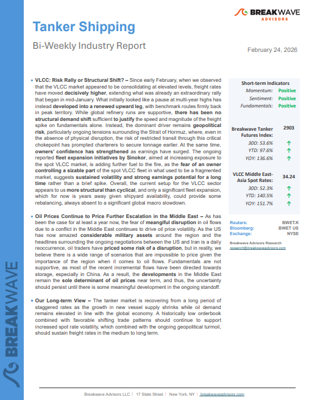
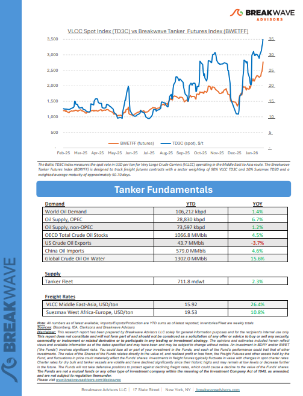

Welcome toBreakwave AdvisorsWeekend Read
As the week comes to a close, take a moment to review the key insights from the past few days. Missed something? We've gathered all the top insights for you to catch up at your convenience.
Breakwave Shipping Report
VLCC: Risk Rally or Structural Shift?– Since early February, when we observed that the VLCC market appeared to be consolidating at elevated levels, freight rates have moveddecisively higher, extending what was already an extraordinary rally that began in mid-January.


Insights Of The Week
Markets rally after US court deems Trump tariffs illegal
Rising geopolitical tensions pushed energy markets higher. Industrial metals gained after Trump’s reciprocal tariffs were deemed illegal. Precious metals also rose.
Commodities Wrap
What’s Going on with VLCC Rates?
VLCC freight rates have surged to levels not seen in years, surprising many market participants and prompting fresh debate across the tanker market.
Market intelligence suggests…
Global Grain Export Forecast Raised Yet Again
The United States Department of Agriculture (USDA) has released its latest forecast for the current 2025/26 season and is now predicting that global coarse grain, wheat, soybean, and soymeal exports will total 745.7 million tons.
From Commodore's Weekly Dry Bulk Reports
Sinokor has positioned itself as the single largest VLCC commercial operator - a scale that materially alters the competitive structure of the segment.
A New VLCC Leader - Inside Sinokor’s Market Rise
Market Commentary
From 1 Jan to 20 Feb 2026, the dry bulk S&P tape has been running at a materially stronger tempo compared to the same window of 2025.
Xclusiv Shipbrokers Weekly Report
What lies ahead for Russian oil exports?
In this article we review what is the near-term outlook for Russian seaborne crude exports amid growing reliance on China as the ultimate export outlet.
Vortexa Freight Weekly
The Year of the Fire Horse
In the Asian calendar, the transition from the Year of the Wood Dragon to the Year of the Wood Snake was traditionally associated with a shift towards reflection, intuition and gradual transformation.
Doric Weekly Market Insights
What the Supreme Court’s ruling means for businesses, and your portfolio
The abolition of nearly 2/3 of “Liberation day” tariffs by the US Supreme Court prompted the White House to temporarily replaced them with a 10% to 15% blanket tariff.
Forvis Mazars Weekly Note
Outstanding Loan Growth in China Sets Another Record Low
As we discussed in Commodore Research's most recent Weekly China Report, the latest released data shows that outstanding loan growth in China has fallen to 6.1% which has marked yet another record low.
From Commodore's Weekly Dry Bulk Reports
Panamax Freight View on Indonesian Thermal Coal Flows

This week's focus highlights the softening trend inSignal Ocean Platformdata flows for Indonesian thermal coal shipments to India, particularly within the Panamax vessel segment, toward the end of February.
Signal Ocean Dry Weekly Market Monitor